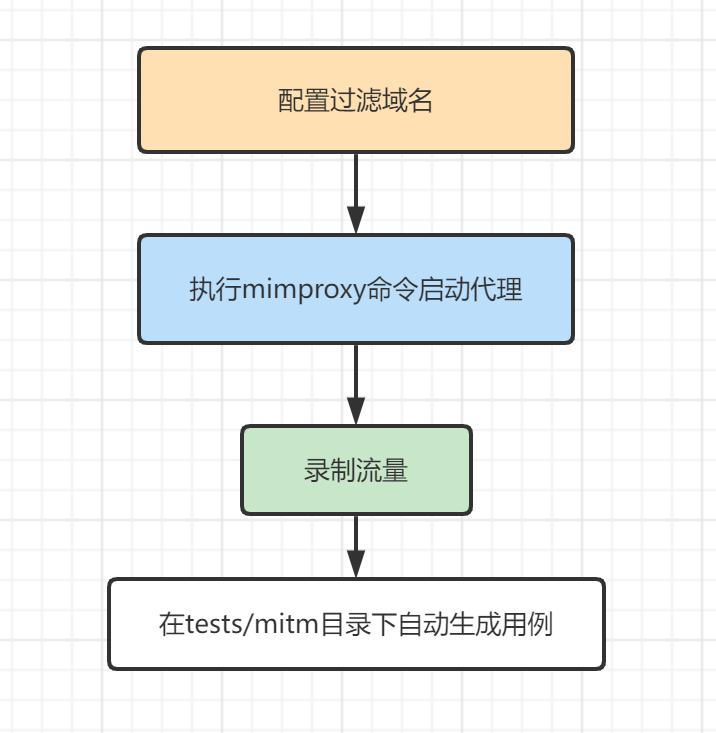
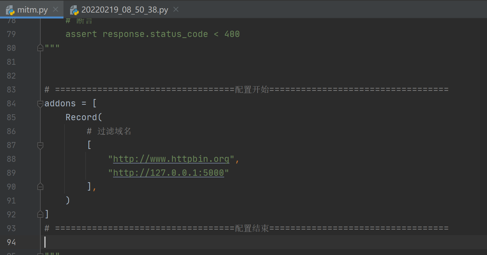
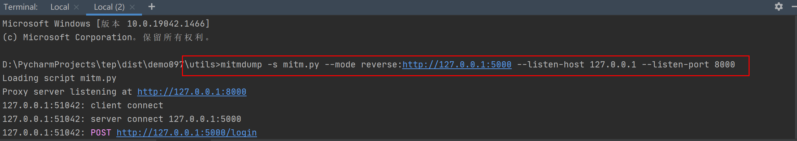
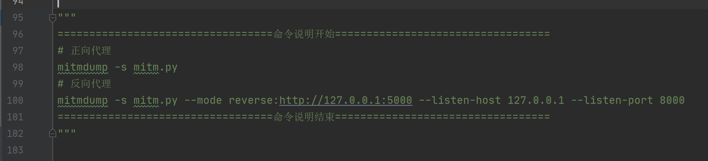
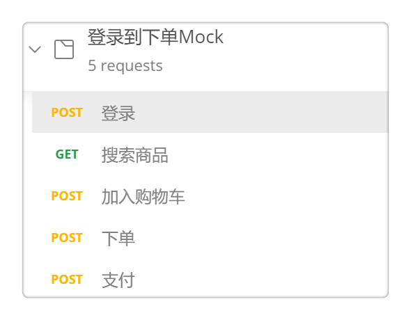
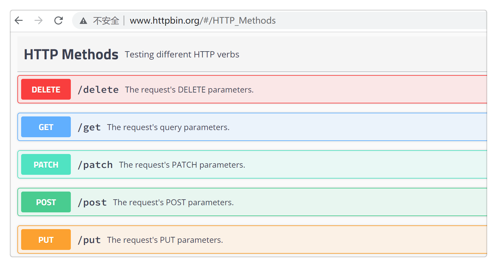
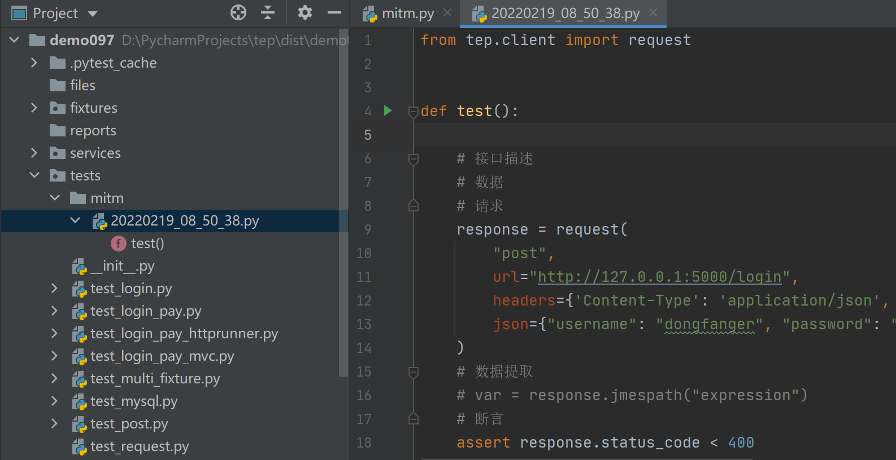

10 tep集成mitmproxy录制流量自动生成用例¶

使用¶
操作过程非常简单，流程如下：

①配置过滤域名
必须配置，不然会有很多无效流量造成数据冗余。

②启动代理
「示例」使用了反向代理，tep自带FastApi启动Mock服务：

「实际」使用正向代理，并手动配置代理。命令说明在
utils/mitm.py文件中有：
③录制流量
「示例」通过Postman发起请求：

「实际」在网页上点点点。

自动生成用例
用例就在tests/mitm实时生成好了，用例文件名为当前时间：

每录制一个请求，就能在测试用例中看到实时添加了一条测试步骤：
# 接口描述
# 数据
# 请求
response = request(
"{method}",
url="{url}",
headers={headers},
{body_grammar}
)
# 数据提取
# var = response.jmespath("expression")
# 断言
assert response.status_code < 400
录制完成以后，就可以再次编辑测试用例完善它。
原理¶
utils/mitm.py源码如下：
#!/usr/bin/python
## encoding=utf-8
## mitmproxy录制流量自动生成用例
import os
import time
from mitmproxy import ctx
project_dir = os.path.dirname(os.path.dirname(os.path.abspath(__file__)))
tests_dir = os.path.join(project_dir, "tests")
## tests/mitm
mitm_dir = os.path.join(tests_dir, "mitm")
if not os.path.exists(mitm_dir):
os.mkdir(mitm_dir)
## 当前时间作为文件名
filename = time.strftime("%Y%m%d_%H_%M_%S", time.localtime()) + ".py"
case_file = os.path.join(mitm_dir, filename)
## 生成用例文件
template = """from tep.client import request
def test():
"""
if not os.path.exists(case_file):
with open(case_file, "w", encoding="utf8") as fw:
fw.write(template)
class Record:
def __init__(self, domains):
self.domains = domains
def response(self, flow):
if self.match(flow.request.url):
# method
method = flow.request.method.lower()
ctx.log.error(method)
# url
url = flow.request.url
ctx.log.error(url)
# headers
headers = dict(flow.request.headers)
ctx.log.error(headers)
# body
body = flow.request.text or {}
ctx.log.error(body)
with open(case_file, "a", encoding="utf8") as fa:
fa.write(self.step(method, url, headers, body))
def match(self, url):
if not self.domains:
ctx.log.error("必须配置过滤域名")
exit(-1)
for domain in self.domains:
if domain in url:
return True
return False
def step(self, method, url, headers, body):
if method == "get":
body_grammar = f"params={body}"
else:
body_grammar = f"json={body}"
return f"""
# 接口描述
# 数据
# 请求
response = request(
"{method}",
url="{url}",
headers={headers},
{body_grammar}
)
# 数据提取
# var = response.jmespath("expression")
# 断言
assert response.status_code < 400
"""
## ==================================配置开始==================================
addons = [
Record(
# 过滤域名
[
"http://www.httpbin.org",
"http://127.0.0.1:5000"
],
)
]
## ==================================配置结束==================================
"""
==================================命令说明开始==================================
## 正向代理
mitmdump -s mitm.py
## 反向代理
mitmdump -s mitm.py --mode reverse:http://127.0.0.1:5000 --listen-host 127.0.0.1 --listen-port 8000
==================================命令说明结束==================================
"""
通过mitmproxy命令启动代理后，获取当前时间作为文件名在tests/mitm下生成用例文件，给addons添加插件Record类，通过response钩子捕获请求信息，对请求进行域名过滤，域名匹配成功的请求就使用测试步骤代码模板，填充method、url、headers、body数据，追加到测试用例文件中。
自动生成的用例只支持tep风格。我也考虑过同时兼容tep、mvc、httprunner，但是实际编写过代码后，我仍然坚持认为tep风格是我最喜欢的编写方式，尽量贴近原生，可以减少出错风险，同时获得更多代码自由。
想体验的大佬可以升级或安装tep的0.9.7版本，使用tep startproject demo创建项目即可。
参考资料：
基于mitmproxy实现接口录制 https://testerhome.com/topics/29457
mitmproxy生成httprunner脚本 https://testerhome.com/topics/30204